Diagrama de Atividade Cadastro
UMLActivity
Projeto 1
::
Model
::
Usuario
::
Diagrama de Atividade Cadastro
Description
none
Diagrams

Diagrama de Atividade Cadastro
Groups
Usuário
Administrador
Nodes
InitialNode1
Acessa a aplicação
Verifica documentos
Cadastra usuário
Retorna o motivo da reprovação
Edges
(InitialNode1→Acessa a aplicação)
(Acessa a aplicação→Cadastrar novo usuário)
(Cadastrar novo usuário→Preencher campos)
Aprova o cadastro ? (Verifica documentos→DecisionNode1)
Sim (DecisionNode1→Cadastra usuário)
Não (DecisionNode1→Retorna o motivo da reprovação)
(Retorna o motivo da reprovação→Preencher campos)
(Preencher campos→Verifica documentos)
(Cadastra usuário→Envia Comprovante de aprovação)
(Envia Comprovante de aprovação→ActivityFinalNode1)
Properties
Name
Value
name
Diagrama de Atividade Cadastro
stereotype
null
visibility
public
isReentrant
true
isReadOnly
false
isSingleExecution
false
Owned Elements
Diagrama de Atividade Cadastro